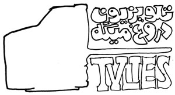

|
|
علیه صدا و سیما - دیگر دروغ نمیخوریم
جمعه12 تیر 1388
اخبار روز: گروهی از فعالین مدنی در ایران، با انتشار اطلاعیه ای ضمن انتقاد شدید از برنامه های تلویزیون جمهوری اسلامی، از مردم و به ویژه زنان خواسته اند کالاهایی را که از این تلویزیون تبلیغ می شود، تحریم کنند:

پس از اعلام نتیجه ی دهمین دوره ی ریاست جمهوری که با اعتراض عمومی و گسترده ی مردمی مواجه شد، حضور پررنگ مردم در خیابانها به حدی چشمگیر بود که اخبار، تصاویر و ویدئوهای مردم ایران هنوز هم خبر اول همه ی رسانه های دنیا است، اما انعکاس جانبدارانه و مغلوط صدا و سیما از این اعتراضات مدنی، هرچند دور از انتظار نبود اما دیگربار ماهیت انحصارطلبانه و ضدملی این رسانه را آشکار کرد خبرها، سریال ها و آگهی های زن ستیز و مردسالارانه، بحث های جانبدارانه و همسو با دولت و پرونده سازی علیه فعالان جامعه ی مدنی نشانه های بارز این انحصارطلبی است.
در سرزمینی که عمر روزنامه های آن به یک روز رسیده و فیلترینگ گسترده ی سایت های اینترنتی راه دسترسی مردم به اخبار را بسته است، تلویزیون به دلیل سهولت دسترسی و گستردگی مخاطبانش اصلی ترین ابزار تاثیرگذاری بر افکار عمومی محسوب میشود؛ اما صدا و سیمایی که با سرمایه ی مردم ایران اداره می شود به هیچوجه منعکس کننده ی اخبار و عقاید طیف های فکریِ مختلفِ ایرانیان نیست؛ و اینک با بی توجهی کامل نسبت به اعتراضات گسترده ی مردمی، به وارونه سازی وقایع - همانند مرگِ ندا آقاسلطان- و اعتراف سازی از فعالان اجتماعی و سیاسی و روزنامه نگاران روی آورده است این در حالی است که ضمن بی تفاوتی به اعتراضات مدنیِ مردم و دستگیریهای گسترده ی اخیر،
شعور و اندیشه ای را که در خیابان ها به خاک و خون کشیده می شود اغتشاش نامیده و نقش پررنگی در پرونده سازی برای مردم و فعالین ایرانی بازی میکند: این رسانه هیچگاه رسانه ای مردمی نبوده است؛ این رسانه نه صدای ماست و نه سیمای ما، ما مردم معترض و تحت فشار ایران
خرید محصولاتی که از طریق صدا و سیما تبلیغ می شود را تحریم کنیم!
از امروز میخواهیم با تحریم خرید محصولاتی که از طریق رادیو و تلویزیون تبلیغ می کنند، مخالفت و اعتراض جدی خود را نسبت به عمل کرد رسانه ای که قرار بود ملی باشد اعلام کنیم تحریم این رسانه ی انحصاری و ضدملی بیش از همه بر دوش زنان است که بیشترین مخاطب صدا و سیما هستند و اصلی ترین نقش را در انتخاب و خرید کالاهای خانگی دارند. از زنان می خواهیم با تبلیغ و تشویق همگان به عدم خرید کالاهای تبلیغاتی در صدا و سیما و تشویق تولیدکنندگان به پرهیز از ارائه ی اگهی در آن رسانه، در این نافرمانی مدنی مشارکت فعال داشته باشند.
تا ادامه ی پخش اگهی این شرکت ها از صدا و سیما، از خرید کالاهای زیر خودداری می کنیم:
ایزوگام شرق، گلاب نادر، ایرانسل، محصولات تک، تاژ، داروگر، چیتوز، صحت، وارنا، دالوپ، تلاونگ ....
تغییر برای برابری :
و همچنین تبرک، چیچک، تولی پرس، تارومار، گلریز، ماسیس، لین، لادن، مزمز، بیستک، نیکتا، اتک، پاک، سامسونگ و ال جی